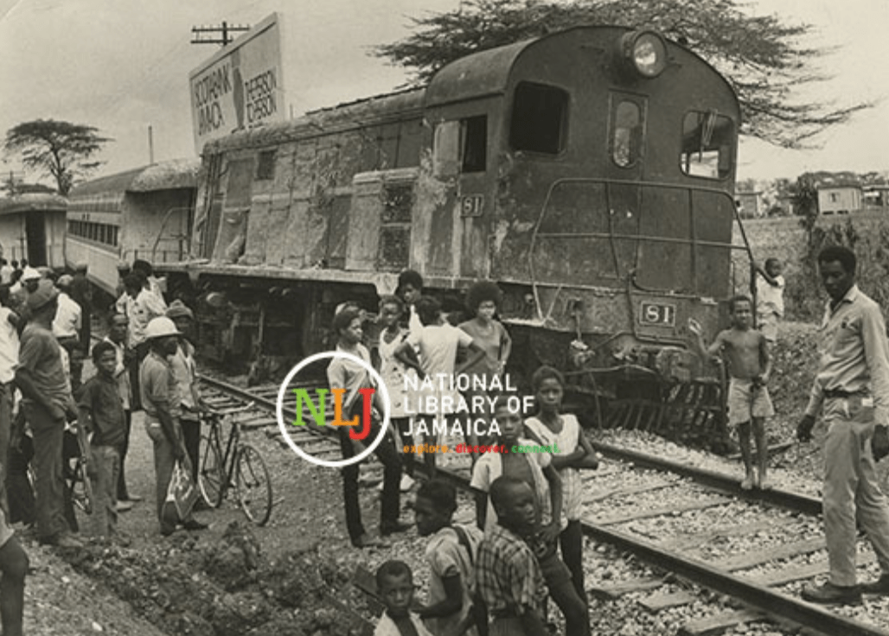
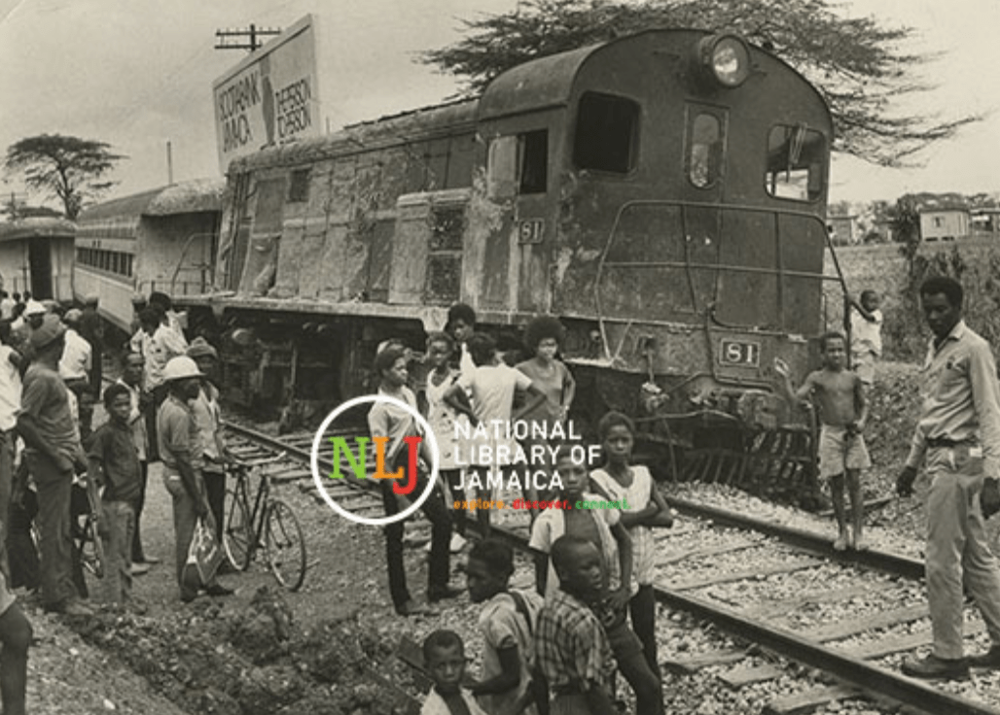

Luna van Schadewijk
REVISITING JAMAICA'S TRAIN TRACKS
GD Thesis 2022/23
My partner Obi was born in Balaclava, a small town in central Jamaica. Nearby the house, train tracks run through the mountains. The tracks are no longer in use, but they gained a variety of new purposes in the community. Growing up, Obi and his brothers used the tracks to find their way home when the electricity went out. The slats of wood under their feet would function as navigational aid. On the corner by Angie’s shop and Munchie’s bar, the tracks cross the road. At this intersection, a meeting point emerged for people asking drivers for money.
When Obi and I went to Jamaica and visited their grand-aunt, aunt Indi spoke to us about Prince Charles and Diana. It struck me as odd that Indi, an elderly woman living by herself in Balaclava, was concerned with the British monarchy. My partner then pointed out that Indi had grown up in Jamaica under British rule. The island had become an English colony in 1665, captured by the English Protectorate of the Spanish Empire. Under a variety of designations, the British continued to wield authority over Jamaica until 1962 . Jamaica remains part of the Commonwealth today.
The obsolete train tracks that run through Balaclava are one of the many marks the British left on the island. Many remnants of colonisation are cultural and thus indirect, such as aunt Indi being concerned with the British monarchy. Jamaica’s economy, customs, language and other cultural expressions have all been affected by British colonisation, but none of these marks are tangible. The obsolete train tracks sparked an interest in me because they are, distinguishable on the landscape like scars left on the soil. The train tracks visibly interfere with the present as they are a tangible remnant of the past. In this text I question the ways in which the tracks continue to shape Jamaica today, what collective memory they represent and whether there is a way to subvert the meanings they carry.
As I was born in the Netherlands, I lack the first-hand experiences living in the vicinity of Jamaican train tracks that my partner and aunt Indi share. I am a white, cis-female Dutch resident of Dutch nationality and heritage. As such, I do not have any kind of personal experience associated with growing up in Jamaica and/or in an ex-colonised country. My writing here thus does not contend to reflect objective truth, or any form of “Jamaican sentiment”. Through this text I aim to give shape to a theoretical framework within which Jamaica’s train tracks and their present meaning can be (re)considered. Given my own unfamiliarity with the tracks, the text will serve as a stepping stone to a larger research within which I hope to learn from Jamaicans living around the tracks about their visions.
The routes of Jamaica’s railway network were instrumental in the establishment of political hierarchies on the island. As a colonial intervention on the land, the placement of the railways was decided by and in favour of the British. The reorganisation of infrastructure has been commonly employed as a tool to assert political control. Infrastructure gives shape to new hierarchies by bringing certain points relatively closer to other designated locations, subjugating all that falls between:
“Infrastructure shapes territories and governs the movements and processes within and across them. But infrastructure excludes, contains, and subjugates as much as it includes, moves, or liberates. The effects of infrastructure, therefore, are often multiple, paradoxical, or inconsistent.”
The U.S. Interstate Highway system exemplifies the way infrastructure can exclude and subjugate. Created by President Eisenhower in 1956, it is infamous for its racist political intent. The highways broke up many Black and Brown communities “through intention and indifference” , purposefully going around white neighbourhoods. The plan worked in conjunction with an effort for urban renewal, that aimed to get rid of substandard housing and businesses to replace them with newly developed suburbs. Black neighbourhoods were considered ghettos and were erased in favour of new construction, loans and mortgages for which were available only to white residents due to redlining policies mandated by the government. The routes of the Interstate Highway system created a hierarchy: the system improved access to good housing and efficient transportation for white residents, as it excluded Black and Brown communities.
The Jamaican railway similarly created new hierarchies. The tracks offered significant economic opportunity, causing the towns off the line to lose considerable population and the towns directly bordering or crossed by the tracks to increase in size . The routes and stops had been laid out by the British, primarily benefitting the production and trade of sugarcane. The railways were proposed in 1843 by William and David Smith, respectively an owner of Jamaican land and a sugarcane planter. The tracks were intended to revitalise the sugar plantations and facilitate the establishment of central sugar factories. The proposal as formulated by the Smiths laid out the plan for a double track of roughly 23 kilometres between Kingston and Spanish Town, with branch lines to Angels, Port Henderson and the Caymanas sugar estate.
The railways manifested British colonisation on the landscape through the hierarchies inherent in their infrastructure. The British further asserted their control on the map through the act of naming. The replacement of toponyms is a powerful tool to assert political control, as it erases the memory of previous rule . Jamaica’s landscape as it exists today was mapped and named by the Brits. The names of the towns were adapted from the previous Spanish names and the Arawak names before those. “Spanish Town” had been called “Villa de la Vega” by the Spanish. It had been the capital under their rule, but the English moved the capital to the newly established town of Kingston. Kingston was built on the plain of Liguanea, an area presumed to have been named after green lizards common in Jamaica, now referred to by Jamaicans as “guanas”. The Arawaks had called them “iwanas” and the Spanish “iguanas”. The name most likely originated from the Arawak word, although the naming process of the land is presumed to have first been carried out by the Spanish. The fourteen parishes that make up Jamaica were divided and named by the British in order to facilitate efficient government.
The notion of reimagination is grounded in Afrofuturism, a movement proposing alternative futures from a Black perspective. Reimagination is the notion of imagining the change of present meanings, making space for alternative futures.
Historian and writer Robin D.G. Kelley writes about the urgency of (re)imagination in his book ‘Freedom Dreams’. He explains that the imagination of alternative futures is crucial to any transformative struggle, for “without new visions we don’t know what to build, only what to knock down.”
Progressive social movements do not simply produce statistics and narratives of oppression; rather, the best ones do what great poetry always does: transport us to another place, compel us to relive horrors and, more importantly, enable us to imagine a new society. (...) It is that imagination, that effort to see the future in the present, that I shall call ‘poetry’ or ‘poetic knowledge’.
This effort to see the future in the present is an act of resistance; the present is being resisted through the imagination of an alternative future. Octavia E. Butler is said to have been the first Black female science-fiction writer and is a central figure within Afrofuturism. In her novels and short stories, she used science fiction (or ‘speculative fiction’) to offer a view of the future that poignantly points out issues in the present and offers a framework for the reader to reimagine their present and future.
When watching ‘Chef’s Table’ , I was met with a striking example of the power of reimagination. In the first episode of season six, chef Mashama Bailey talks about the history of her restaurant, The Grey. The restaurant is housed in a former Jim Crow segregated bus station in Savannah, Georgia. Bailey recalls that when she first entered the abandoned bus station, there was a sign still hanging in the back that read “Colored Waiting Room”. Bailey, a Black woman who grew up in Savannah, imagined how her ancestors must have been obliged to sit in that waiting room. The bus station, like the bunker and the railways, was an object indicative of a past that shaped the present.
When Bailey and her business partner made the bus station into a restaurant focused on Black southern cuisine, they reimagined the bus station and its meaning to the community. They did not attempt to erase its history, but they changed its affordances. The Grey “evokes the spirit of the past”, as cultural commentator Osayi Endolyn points out. In her words, “What the Grey does is it says, ‘We have this past, we have this history, and here is where we’re going.’ It’s a forward-moving conversation.” The Grey opens a way to a future of broader horizons.
In her 2008 essay “Venus in Two Acts”, cultural historian Saidiya Hartman formulates the notion of ‘critical fabulation’. Critical fabulation is akin to reimagination, but instead of focusing on the (re)imagination of the present or future, it focuses on imagination as it pertains to the past. “Archives and historical records are filled with countless gaps and omissions, especially as it related [sic] to the lives of enslaved people. In order to redress history’s omissions, Hartman uses storytelling to imagine not only what was, but also what could be.” The act of imagining what could have been is what Hartman calls ‘critical fabulation’. In ‘Venus in Two Acts’, she concerns herself with Venus, an enslaved Black girl emblematic of all women who were enslaved in the Atlantic world. By “straining against the limits of the archive” , Hartman fights the erasure of the lives unarchived. She remembers the sound that no history books record.
The Jamaicans who laid the tracks, those who worked as conductors and drivers, are the Venus to the story of Jamaica’s railways. The archives are rife with stories of the British concerning themselves with Jamaica’s train tracks, but the perspective of Jamaicans who worked for the Jamaica Railway Corporation is scarcely recorded. Here goes what the archives tell us. On August 1, 1834 enslaved Jamaicans were formally freed. All enslaved persons over the age of six, however, were subjected to a mandatory six-year period of “apprenticeship” following the formal abolition of slavery in Jamaica. The apprenticeship entailed that the ‘previously’ enslaved persons were obliged to work without pay three quarters of the week, for their ‘former’ masters. In exchange they would receive food, clothing and lodging. They could choose to work for pay in the fourth quarter of the week, and eventually use that money to buy themselves freedom. The system of apprenticeship was abolished four years later; full emancipation of enslaved people in Jamaica came on August 1, 1938.
The small-scale domestic production and internal marketing that had developed among enslaved people accelerated after 1938. The need to transport goods in this market gave rise to a network of roads that connected Jamaica’s interior to the towns and coastal ports. The roads, however, were in a “deplorable condition” and although the government devoted a large budget to road repairs every year, nothing much happened. As a result, the movement of goods and people was slow and there was a pressing need for a more efficient method of transport.
The peasants were not alone in their desire for improved transport. The sugar planters predicted it would revitalise their plantations and facilitate the establishment of central sugar factories. The construction of the railways followed in 1843. Initially the railways were a private endeavour, primarily funded by British merchants and bankers. The widespread enthusiasm for the railways soon waned, however, when the plantation economy continued to decline and local capital for railway upkeep and expansion was lacking. The tracks became dangerous due to poor maintenance and train services were irregular.
Sir Anthony Musgrave, a Brit who became governor in 1877, believed that Jamaica’s economy would greatly benefit from well managed train transport. During his governorship the government purchased the railway and ushered in a period of repair and modernisation. The railways were privatised again in 1889, and again nationalised in 1900. The railway company then became a statutory corporation in 1960 and was renamed the Jamaica Railway Corporation, which still exists today. In the hundred something years that Jamaica’s train tracks were actively in operation and repeatedly privatised and nationalised, the railways knew periods of extension and deterioration.
In the plantation economy, the railway system had encouraged the diversification of crops, playing an especially important part in the growth of the banana industry. Bananas had to be shipped out within two days in order to meet the export requirements; bruised fruits were rejected. Road transport with pack animals or animal drawn carts was not only limited in scope, it also caused considerable damage to the fruits. Railways were cheaper, faster and more efficient. The banana plantations grew from 10,000 acres in 1891 to 73,000 in 1934. In the same time frame, Jamaica’s coconut, cacao and citrus industries grew significantly due to rail transport.
The peasantry benefited from the railway system as well. Allowing peasant producers to move larger quantities over longer distances bolstered their economic opportunities and resulted in a more balanced supply of food around the island. In addition to the agrarian sector, the railway system benefited commercial, manufacturing and mining industries.
When the automobile started to appear in Jamaica in 1930, railways ceased to be the only means of fast and cheap transportation. From 1933, the Jamaican Railway Company rarely earned more than they spent, and losses became the norm in the early 1940s. The JRC heavily relied on loans and subsidies for its continued survival and became a drain on the government’s resources. The maintenance of the tracks was neglected and the first line closed in 1974. By 1992, the public passenger railway service was closed completely.
The railways continued to mark Jamaica’s soil in the years that followed. To many Jamaicans, the tracks aren’t merely remainders of the colonised past, but also of major accidents. My partner Obi told me that a passenger train jumped the rails in in their hometown Balaclava in 1938, injuring 70 and killing 32 people. Barely twenty years later, a heavily overpacked train on its way from Kingston to Montego Bay derailed. The disaster left 200 dead and 700 injured. At the time, the accident was the second worst rail disaster in the world. The tragedies left by the British colonisers were extended through the rail network they established. The rails are reminiscent of colonisation and its victims as they are of those killed and injured by these accidents.
Perhaps the tracks could thus be considered a memorial rather than a scar imprinted on the land. The tracks simultaneously remember the victims of the railway accidents and the victims of colonialism. Both scars and memorials contain an inference to the past. Initially I thought the two were distinguished by the lack of intent, a memorial the active attempt to remember and a scar a reminder of a past that may rather be forgotten. In many cultures, however, the scar is purposeful, a mark on one’s skin they might be proud of. The train tracks as a scar might also be considered purposeful. I would argue that Britain as a coloniser meant to have a lasting effect on Jamaica, not in the least supported by the fact that Jamaica today is still part of the commonwealth. The difference between a scar and a memorial is then better defined by the notion of honour.
While I would argue that any memorial is constructed with the intent to honour, that is not to say that the object of memorial had to have been put in place specifically for that purpose. Following RAAAF’s argument, meaning is constructed in interaction. In the event of terrorism or murder, flowers are often left at the location of the incident in the days following. Ordinary places —tram stops, pavements, squares— are transformed into memorial sites within hours, through the interaction of the public with the location. These memorial sites are constructed through the intent to honour the victims. They are, in that regard, no less legitimate as memorials than famous monuments like the 9/11 Memorial Pools or the Vietnam Veterans memorial. Such impromptu memorial sites demonstrate the power of collective reimagination and according interaction. When the flowers die and the candles melt, (some of) these sites might become something I would call the ‘invisible memorial’.
An invisible memorial to me is a memory contained by the land. In her book “In the Wake: On Blackness and Being”, Christina Sharpe writes about the residence time of blood in water. When 1.8 million enslaved people died in the ocean during their transportation via the Middle Passage, their blood introduced large amounts of sodium into the North Atlantic. This sodium informs the flow of the ocean and has a residence time of 260 million years. The ocean’s flow, then, remembers the countless people who died there and will continue to do so for 260 million years. Sharpe calls this ‘the wake’ . I consider the flow of the North Atlantic an invisible memorial. The memory of the sea far outlasts any human recollection, but is imperceptible without imagination. Sharpe’s formulation of the wake is crucial to the reimagination of the ocean as memorial.
Paul Gilroy’s concept of the Black Atlantic is given increasing depth by Sharpe’s notion of the wake. In his 1993 book of the same name, Gilroy introduced the notion of the ‘Black Atlantic’. Black Atlantic culture, according to Gilroy, is not solely African, American, British or Caribbean, but encompasses all of these at once in a way that transcends national borders. Black Atlantic culture exists in Sharpe’s wake. Performance artist and researcher Alexander Cromer argued that the wake constitutes an anti-Black environment that is present so long as the flow of the waves remain informed by the blood of the enslaved. All of whom Gilroy includes in his notion of Black Atlantic culture, are as such heir to the Atlantic, bound together by the wake.
Invisible memorials such as Sharpe’s wake can be found anywhere. Researchers have found that the Little Ice Age, a period of extreme regional cooling between the 16th and 19th century, might have been propelled by the American genocide and spread of disease that killed nearly 55 million Indigenous people in the 16th century. This massive loss of life left roughly 56 million hectares of land abandoned. The population had practiced a “substantial amount of ag¬riculture” and the sudden stop led to the flourishing of plant life.
The spike in plant life caused a significant increase in photosynthesis, which transfers carbon dioxide from the atmosphere to the land surface. The substantial increase is said to have caused up to 67% of the drop in atmospheric carbon dioxide levels between 1520 and 1610. The period of regional cooling that followed this massive decrease of carbon is known as the “Little Ice Age”. I would consider this Little Ice Age an example of an invisible memorial, as the death of 55 million Indigenous remained present in and remembered by the atmosphere.
The drop in atmospheric carbon dioxide levels can be found in ice cores. Ice records and remembers their environment, as it captures the atmosphere. “As glaciers melt and ice sheets retreat, information about the Earth’s climate histories is also vanishing as ancient air bubbles captured in ice are released. The atmospheric archive recorded by glaciers and ice sheets provides unequivocable evidence of increased greenhouse gas emissions and thus global warming.” Susan Schluppi, who specialises in material evidence (invisible memorials), has done extensive research into this phenomenon.
The train tracks, embodying colonial influence and several accidents, are likely to have affected the land in a way that resembles the ocean’s flow and atmospheric shift. A study researching a body of railways in Poland has found that “Railway transport is a source of pollution to soils and living organisms” . The study sampled an array of “railway basement soils”, extracted from the depth of 0-20 cm under the crushed stone from numerous railway stations in north-eastern Poland. It found pollutants (such as heavy metals and oil-derived substances) in all examined soils and varying levels of soil toxicity. The authors conclude that railway transport “may cause potential hazard to the natural environment than hitherto assumed.”
Although no such research appears to have been carried out in Jamaica, it is reasonable to assume that the railways in Jamaica have similarly affected the soil. One could argue that in that way, the soil recorded and continues to remember the colonial presence and its emissions as well as repercussions on Jamaican ground. The train tracks –or more specifically, the soil they are on– can then be considered an invisible memorial. Additionally, the train tracks could become an impromptu memorial through interaction and, perhaps more importantly, imagination. The train tracks resemble Van Saarloos’ fallen statue barring the way, if only they are construed as such.
Save for an attempt in 2011 to revive the public passenger service, the railways have been unused ever since. The tracks remain and make tangible a memory of Jamaica’s colonial past, symbolising how colonialism reaches far beyond the end of a coloniser’s rule. Beyond that, the tracks influence daily life, through constant interaction with those who live in their vicinity. The soil the tracks are on continues to remember the past through the pollutants that have entered it over the years.
In this thesis I have attempted to place Jamaica’s train tracks within a framework of thought, within the practice of reimagination and the way the past continues to exist in the present and future. I feel this research has provided me with the necessary theoretical background to go to Jamaica and learn from those living around the train tracks about their imaginations for the railways and the role they would like the tracks to have in their lives.
On a corner in Balaclava, between Angie’s shop and Munchie’s bar, the train tracks cross the road. Every time a driver nears the tracks, they slow down, preventing their car from derailing. It is there that the tracks transgress time and space and become the fallen statue, the daily aggravation, that is both physically and psychically in the way, reminding us of the past ever present.


 
